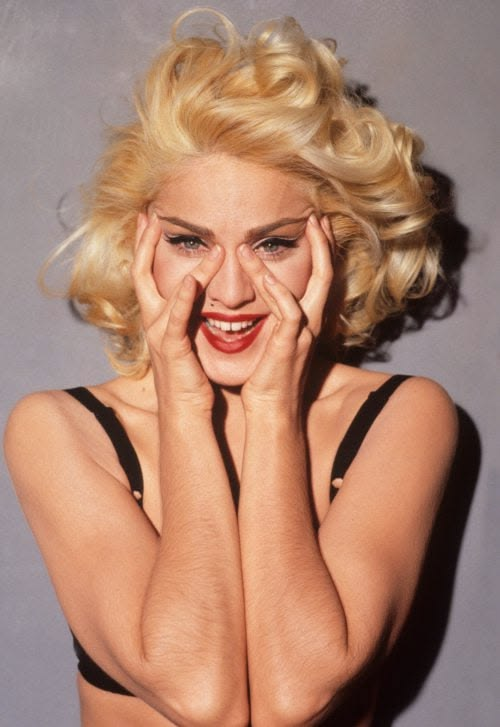
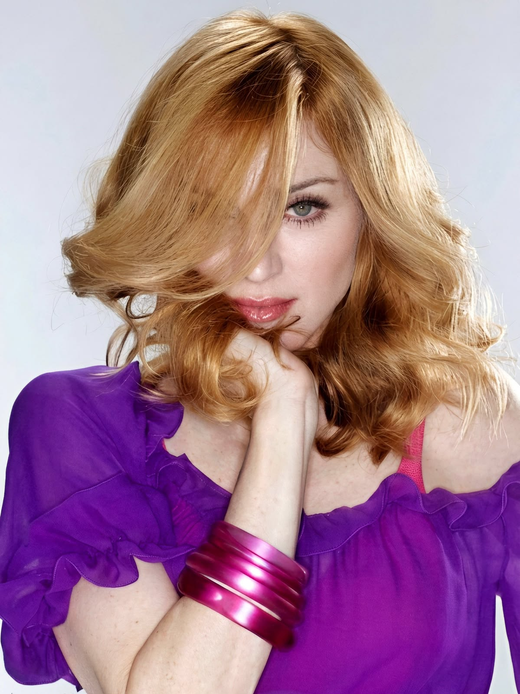
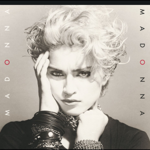

Madonna es una de las artistas más importantes del siglo XX. Su música e impacto han trascendido generaciones y es indiscutiblemente considerada por muchos como la reina del pop. Además, su capacidad de reinvención ha sido clave para su longevidad en la industria musical. Cuenta con 15 álbumes de estudio lanzados a lo largo de 43 años y 12 canciones #1 en el listado Billboard Hot 100 (empezando con Like A Virgin en 1984 y terminando con Music en el 2000). Su gira "Sticky & Sweet" del 2008/2009 fue la gira más taquillera por una artista femenina hasta el 2023.
